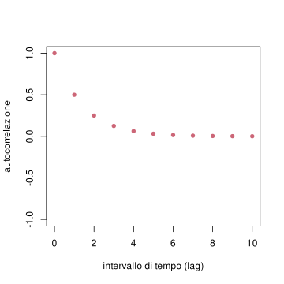
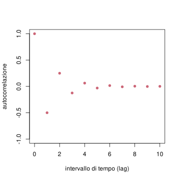
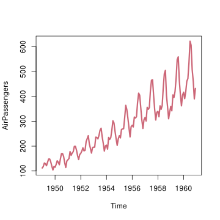
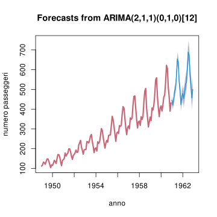
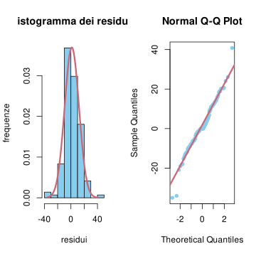
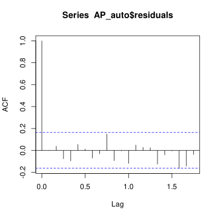
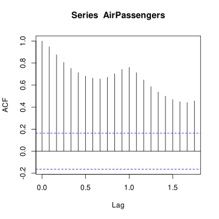
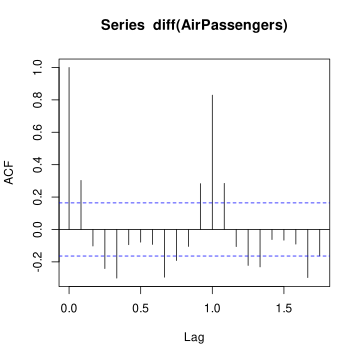
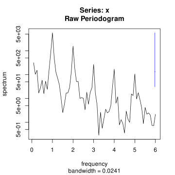
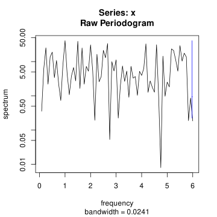

t = 0:10
alpha = 1/2
plot(t, alpha^t, pch=16, lwd=3, col=miei_colori[2], ylab='autocorrelazione', xlab='intervallo di tempo (lag)', ylim=c(-1,1) )
In questo capitolo affrontiamo lo studio dei processi stocastici a stati continui (e tempi discreti) concentrandoci in particolare nel caso in cui l’insieme degli stati siano i numeri reali (l’estensione di processi a valori vettoriali sarà solo accennata).
Nella Sezione Sezione 7.1 introduciamo i concetti fondamentali di funzione di media e di autocovarianza (o di autocorrelazione) di un processo a valori reali. Vedremo anche una nozione più debole di stazionarietà, che tuttavia per l’esempio fondamentale dei processi gaussiani coincide con la stazionarietà usuale.
Nella Sezione Sezione 7.2 studiamo tre esempi di processi (gaussiani), il rumore bianco, la passeggiata aleatoria e l’equazione lineare con smorzamento.
Le Sezioni Sezione 7.3 e Sezione 7.4 sono dedicate allo studio modelli di processi a stati continui, detti ARIMA, che generalizzano gli esempi visti sopra. Tale classe di modelli è molto versatile ed utile nelle applicazioni statistiche (detto anche lo studio delle serie storiche).
Infine, nella Sezione Sezione 7.5, riprendiamo lo studio generale dei processi, affrontando il problema di stimare, a partire dalle osservazioni, la funzione di autocovarianza di un processo stazionario.
Dato un processo stocastico \((X_t)_{t \in \mathcal{T}}\) avente come insieme degli stati \(E = \R\), si può considerare il suo valor medio al variare del tempo, definendo così la funzione di media del processo, \[ t \in \mathcal{T} \mapsto \E{X_t},\] e similmente per la covarianza tra due tempi qualsisasi, \[ (s,t ) \in \mathcal{T}^2 \mapsto \Cov{X_s, X_t} = K_{X_s X_t}, \] definendo così la funzione di autocovarianza del processo \(X\). Una notazione piuttosto comune per tale funzione è \[ C(s,t) = \Cov{X_s, X_t},\] qualora sia inteso il processo \(X\) considerato. In alternativa si può indicarla con \(K_{XX}(s,t)\). Notiamo che \[ C(s,s) = \Cov{X_s, X_s} = \Var{X_s}\] è la varianza.
Osservazione. A volte si considera anche la funzione \[ R(s,t) = \E{ X_s X_t},\] che è legata alle funzioni di autocovarianza e di media tramite la formula alternativa per il calcolo della covarianza: \[ R(s,t) = C(s,t) + \E{X_s} \E{X_t}\] Una terza funzione collegata è la funzione di autocorrelazione (in inglese autocorrelation function, abbreviata spesso con ACF) data da \[ (s,t) \in \mathcal{T}^2 \mapsto \operatorname{ACF}(s,t) = \rho_{X_s X_t} = \frac{ \Cov{X_s, X_t}}{ \sqrt{ \Var{X_s} \Var{X_t}} }, \] che ha il vantaggio di essere sempre a valori in \([-1,1]\), essendo un coefficiente di correlazione. Ricordiamo che valori vicini ad \(1\) indicano una forte dipendenza lineare tra le variabili, informalmente \(\operatorname{ACF}(s,t)\approx 1\) indica che che \(X_s \approx a X_t +b\) per opportune costanti \(a\), \(b\) reali.
Osservazione. Nel caso di \(X\) a valori vettoriali, ossia se \(E = \R^d\), la funzione di media è a valori in \(\R^d\), mentre l’autocovarianza \(\Cov{X_s, X_t}\) si estende alla funzione di covarianza incrociata (o cross-covarianza, cross-covariance in inglese), per ogni coppia di componenti \(i\), \(j \in \cur{1, \ldots, d}\), definita come \[K_{X_i X_j}(s,t) = \Cov{X_{i,s}, X_{j,t}},\] ossia la covarianza tra la componente \(i\) del processo al tempo \(s\) e la componente \(j\) al tempo \(t\). Ci limitiamo tuttavia in questo capitolo allo studio di processi a valori reali.
Se il processo è stazionario, le funzioni di media e covarianza dipendono da “un parametro” in meno, ossia la media è costante, mentre la covarianza dipende solo dalla differenza dei tempi. Vale infatti il seguente risultato.
Se \(\mathcal{T} = \cur{0,1,2,\ldots, n}\) oppure \(\mathcal{T} =\mathbb{N}\) e il processo \((X_t)_{t \in \mathcal{T}}\) è stazionario, allora il valor medio è costante nel tempo, \[ \E{X_t} = \E{X_0} \quad \text{per ogni $t\in \mathcal{T}$,}\] mente l’autocovarianza dipende solamente dalla differenza (assoluta) dei due istanti, \[ C(s,t) = C(0, |t-s|), \quad \text{per ogni $s$, $t \in \mathcal{T}$.}\] In particolare, la varianza \(C(s,s) = C(0,0)\) è costante.
Dimostrazione. Il valor medio di \(X_t\) dipende soltanto dalla legge marginale del processo al tempo \(t\) (ad esempio dalla densità discreta o continua) e quindi per stazionarietà \(\E{X_t} = \E{X_0}\). Per l’autocovarianza, supponiamo senza perdita di generalità che \(t \ge s\) e notiamo che \[ \Cov{ X_s, X_t } = \E { (X_s - \E{X_0})(X_t -\E{X_0})} = \E{ g(X_s,X_t)},\] avendo usato il fatto che \(\E{X_s}= \E{X_t} = \E{X_0}\) e la funzione \[g (x, y) = (x- \E{X_0}) (y - \E{X_0}).\] Ricordando che la stazionarietà implica che la legge congiunta di \((X_s, X_t)\) coincide con quella di \((X_0, X_{t-s})\), segue che \[ \Cov{X_s, X_t } = \E{ g(X_s, X_t)} = \E{ g(X_0, X_{t-s})}= C(0, t-s).\]
Il risultato sopra motiva il seguente indebolimento del concetto di stazionarietà, in cui ci si limita a considerazioni sulla media e l’autocovarianza.
Supponiamo che \(\mathcal{T}=\cur{0,1, \ldots, n}\) oppure \(\mathcal{T} = \mathbb{N}\). Un processo \((X_t)_{t \in \mathcal{T}}\) è stazionario in senso lato, se \[ \E{X_t} = \E{X_0} \quad \text{per ogni $t$,}\] e \[ C(s,t) = C(0, |t-s|), \quad \text{per ogni $s$, $t \in \mathcal{T}$.}\]
In generale questa nozione è più debole (ad esempio le informazioni sui momenti primi e secondi non implicano nulla sui momenti di ordine terzo, quarto ecc.). Per distinguere tra questa nozione e la vera e propria stazionarietà, a volte quest’ultima è detta stazionarietà in senso stretto.
Tuttavia, se il processo \(X\) è gaussiano, ossia ogni variabile congiunta \[(X_{t_1}, X_{t_2}, \ldots, X_{t_d}),\] per qualsiasi scelta \(t_1, t_2, \ldots, t_d \in \mathcal{T}\) è un vettore aleatorio gaussiano, allora dalla stazionarietà in senso lato segue la stazionarietà in senso stretto (la vera e propria stazionarietà). Questo perché, per ogni \(s \in \mathbb{T}\) tale che \(t_d+s \in \mathcal{T}\), i parametri di media e di covarianza delle variabili gaussiane vettoriali \[(X_{t_1}, X_{t_2}, \ldots, X_{t_d}) \quad \text{e} \quad (X_{t_1+s}, X_{t_2+s}, \ldots, X_{t_d+s})\] coincidono: il vettore delle medie è uguale per entrambi (vale per ciascuna variabile marginale \(\E{X_0}\)), mentre, per la matrice delle covarianze troviamo che \[ \Cov{X_{t_i}, X_{t_j} } = C(t_i, t_j) = C(0, |t_i-t_j|) = C(t_i+s, t_j+s) = \Cov{X_{t_i+s}, X_{t_j+s} }.\]
In questa sezione descriviamo alcuni modelli fondamentali di processi a stati continui, calcolandone esplicitamente la funzione di autocovarianza e discutendone la gaussianità e stazionarietà. Nella sezione successiva inquadreremo questi processi come casi particolari di una famiglia di processi, detta ARIMA.
Il più semplice processo a stati continui che consideriamo consiste di variabili aleatorie \((W_t)_{t \in \mathcal{T} }\), tutte con la medesima legge e indipendenti. Tale processo assume vari nomi a seconda dell’ambito di studio e in particolare a seconda della legge comune delle marginali. Ad esempio, nel caso di variabili Bernoulli indipendenti, tutte aventi lo stesso parametro \(p \in [0,1]\), ossia \(P(W_t = 1) = p\) per ogni \(t \in \mathcal{T}\), il processo è detto processo di Bernoulli.
In questo capitolo ci concentriamo invece sui processi a stati continui, e il caso che consideriamo è quando tutte le marginali \(W_t\) siano variabili reali, tutte con medesima densità continua gaussiana, di media nulla e varianza \(\sigma^2\): la densità della marginale è quindi \[ p(W_t = w) = \exp\bra{ - \frac {w^2} {2 \sigma^2} } \frac{1}{\sqrt{ 2 \pi \sigma^2}}.\] Un tale processo \((W_t)_{t \in \mathcal{T}}\) è detto rumore bianco gaussiano (in inglese, Gaussian white noise, che giustifica la notazione \(W\)) di intensità \(\sigma^2\), sull’insieme dei tempi \(\mathcal{T}\).
Osservazione. Il termine rumore è motivato dall’utilizzo in modelli di teoria dell’informazione. Supponendo che un messaggio \((M_t)_{t \in \mathcal{T}}\), ad esempio una sequenza di bit, venga trasmesso tramite un mezzo di comunicazione reale (ad esempio tramite onde elettromagnetiche), per modellizzare l’effetto di molteplici fenomeni naturali che portano ad una possibile “distorsione” nella ricezione del messaggio, si suppone che il ricevitore osservi il processo \[ (M_t + W_t)_{t \in \mathcal{T}},\] dove \((W_t)_{t \in \mathcal{T}}\) è un rumore bianco gaussiano di una certa intensità \(\sigma^2\) (è un parametro del modello che si può stimare). Il fatto che il rumore sia sommato spiega perché a volte il rumore bianco gaussiano è anche accompagnato dall’aggettivo additivo. Notiamo di passaggio che in questi modelli anche il messaggio è trattato come una variabile aleatoria (per questo usiamo una lettera maiuscola). Questo è evidente se lo pensiamo dal punto di vista del ricevente, ma anche se assumiamo il punto di vista dell’ingegnere che deve studiare/progettare il mezzo di comunicazione e possibilmente contrastare l’effetto del rumore.
Consideriamo un rumore bianco gaussiano \((W_t)_{t \in \mathcal{T}}\) di intensità \(\sigma^2\). La funzione di media, avendo supposte tutte le \(W_t\) centrate è identicamente nulla: \[ t \mapsto \E{W_t} = 0.\] Anche la funzione di autocovarianza è molto semplice, ricordando che variabili indipendenti non sono correlate, mentre per ipotesi \(\Var{W_t} = \sigma^2\). Pertanto \[ C(s,t) = \begin{cases} 0 & \text{ se $s \neq t$,}\\ \sigma^2 & \text{ se $ s = t$.}\end{cases}\] A volte si usa una notazione abbreviata introducendo la funzione delta (di Dirac discreta) centrata in \(0\), definita così: \[ \delta_0(x) = \begin{cases} 0 & \text{se $x \neq 0$,}\\ 1 & \text{se $x=0$.}\end{cases} \] Si trova allora che \[ C(s,t)= \sigma^2 \delta_0( t-s).\] In particolare, il processo è stazionario in senso lato. Essendo un processo gaussiano, è anche stazionario in senso stretto.
Osservazione. Se il parametro \(\sigma^2\) non è noto, si può stimarlo da \(n\) osservazioni \(W_{t_i} = w_i\), riconoscendo che il problema è lo stesso della stima della varianza di un campione gaussiano (di cui la media è nota). In particolare la stima di massima verosimiglianza in questo caso è data da \[ \sigma_{\mle}^2 = \frac 1 n \sum_{i=1}^n w_i^2.\]
Per comprendere l’aggettivo bianco è invece necessario considerare la trasformata di Fourier del processo. Supponiamo, per evitare di considerare serie, che l’insieme dei tempi sia finito e precisamente \(\mathcal{T} = \cur{0, 1, \ldots, n-1}\). Allora la trasformata di Fourier di \((W_t)_{t=0}^{n-1}\) è data da \[ \hat{W}(\xi) = \sum_{t=0}^{n-1} W_t e^{-2 \pi i \xi t/n}.\] In particolare, osserviamo che per ciascuna frequenza \(\xi \in \cur{0, \ldots, (n-1)}\) la variabile aleatoria \(\hat{W}(\xi)\) è una combinazione lineare (a coefficienti complessi) di variabili gaussiane indipendenti. Il fatto che siano complesse complica un po’ la cosa, perché vanno pensate come variabili gaussiane vettoriali a valori in \(\R^2\), ma si può mostrare che sono comunque variabili gaussiane. Il valor medio di ciascuna di esse è, usando la linearità, \[ \E{ \hat{W}(\xi)} = \sum_{t=0}^{n-1} \E{W_t} e^{-2 \pi i \xi t/n} = 0,\] mentre il valor medio dell’energia associata a ciascuna frequenza \(\xi\) è \[ \begin{split} \E{ | \hat{W}(\xi) |^2 } & = \E{ \hat{W}(\xi) \overline{ \hat{W} (\xi)} } \\ & = \E{ \sum_{t=0}^{n-1} W_te^{-2 \pi i \xi t/n} \sum_{s=0}^{n-1} W_s e^{2 \pi i \xi s/n}}\\ & = \sum_{t=0}^{n-1}\sum_{s=0}^{n-1} e^{-2 \pi i \xi (t-s) /n} \E{ W_t W_s}\\ & = \sum_{t=0}^{n-1}\sum_{s=0}^{n-1} e^{-2 \pi i \xi (t-s) /n} \sigma^2 \delta_0(t-s)\\ & = \sigma^2 \sum_{t=0}^{n-1} 1 = \sigma^2 n. \end{split}\] Quindi l’energia in media su ciascuna frequenza è costante. Poiché il termine \(n\) è l’intervallo di tempo (supponendo di aver osservato a istanti temporali equispaziati con intervalli di ampiezza \(1\)) la quantità \[ \frac{ \E{ | \hat{W}(\xi)|^2 } }{n}\] può essere pensata come una potenza (energia su tempo) media, ed è un caso particolare del concetto di densità spettrale di potenza. Ritorneremo su questa nozione, in generale, nella Sezione Sezione 7.5.
Il secondo esempio che trattiamo consiste nella somma cumulativa di un rumore bianco gaussiano \(W\). Precisamente, posto \(\mathcal{T} = \cur{0,1, \ldots, n}\) o eventualmente \(\mathcal{T} = \N\), definiamo \[ S_0 = 0, \quad S_t = W_1+W_2+ \ldots +W_t = \sum_{s=1}^t W_s,\] dove \((W_s)_{s}\) è un rumore bianco gaussiano di instensità \(\sigma^2\). Si può in alternativa usare una definizione ricorsiva ponendo \(S_0 = 0\) e per ogni \(t \in \mathcal{T}\), \(t \ge 1\), \[ S_t = S_{t-1} + W_t.\] In questo caso il processo si intepreta come una “passeggiata”, in cui ad ogni istante \(t \ge 1\), partendo dalla posizione \(S_{t-1}\), si compie un nuovo “passo” \(W_t\) e spostandosi nella posizione \(S_t = S_{t-1}+W_t\). Il processo \((S_t)_{t}\) è detto passeggiata aleatoria gaussiana.
Osservazione. La passeggiata aleatoria, un po’ come il rumore bianco, si può anche considerare con leggi diverse dalla gaussiana. Un esempio nel discreto è il caso in cui ciascuna \(W_s\) assuma solo valori \(\cur{-1, 1}\), con probabilità uniforme, detto passeggiata aleatoria simmetrica semplice.
Tornando alla passeggiata aleatoria gaussiana, la media di ciascuna \(S_t\) è nulla, infatti \[ \E{S_t} = \E{ \sum_{s=1}^t W_s} = \sum_{s=1}^t \E{W_s} = 0.\] Tuttavia la passeggiata aleatoria gaussiana non è un processo stazionario (neppure in senso lato). Infatti, se lo fosse, la varianza \(\Var{S_t} = C(t,t)\) dovrebbe essere costante, ma vale \[ \begin{split} \Var{S_t} & = \Var{ \sum_{i=1}^ t W_i } = \sum_{i=1}^t \Var{W_i} \\ & = \sum_{i=1}^t \sigma^2 = t \sigma^2.\end{split}\] (ovviamente supponiamo che \(\sigma^2>0\)). Possiamo anche calcolare la funzione di autocovarianza, dati \(s\), \(t \in \mathcal{T}\), ad esempio con \(s \le t\), \[ \begin{split} C(s,t) &= \Cov{S_s, S_t} = \Cov{ S_s, S_s + W_{s+1}+\ldots + W_{t}}\\ & = \Cov{ S_s, S_s } + \sum_{i=s+1}^t \Cov{S_s, W_{i}}\\ & = \Var{S_s} = \sigma^2 s \end{split}\] avendo usato che \(S_s\) è indipendente da \(W_i\), se \(i>s\) perché è funzione del rumore bianco \(W_j\) soltanto nei tempi \(j \le s\). Poiché la funzione di autocovarianza è simmetrica, concludiamo che vale \[ C(s,t) = \sigma^2 \min\cur{s,t}.\] Riassumiamo quanto visto nella seguente proposizione.
Sia \(\mathcal{T} = \cur{0,1, \ldots, n}\) oppure \(\mathcal{T} = \mathbb{N}\) e sia \((S_t)_{t \in \mathcal{T}}\) tale che, per \(t \ge 1\), \[ S_t = S_{t-1} + W_t.\] dove \((W_t)_{t \in \mathcal{T}}\) è un rumore bianco gaussiano di indensità \(\sigma^2\) e \(S_0=0\). Allora il processo \((S_t)_{t}\), detto passeggiata aleatoria gaussiana, non è stazionario, e ha funzione di media nulla e di autocovarianza \[ C(s,t) =\sigma^2 \min\cur{s,t}.\]
Osservazione. Osserviamo che, nel caso fossimo interessati a condizioni iniziali \(X\) diverse da \(S_0 =0\), basta aggiungere alla passeggiata il valore \(X\), ottenendo \(S_k+X\). Se \(X\) è una variabile indipendente dal rumore bianco, i calcoli visti sopra non cambiano, eccetto che alla funzione media va aggiunta la media di \(X\), mentre alla funzione di autocovarianza va aggiunta la varianza di \(X\).
Osservazione. Se il parametro \(\sigma^2\) di intensità del rumore bianco non è noto, si può stimarlo da \(n\) osservazioni \(S_t = s_t\), per \(t=1,2, \ldots n\) passando tramite una differenza finita (o derivata discreta) dalla passeggiata aleatoria al rumore bianco gaussiano: definendo \[ w_t = s_t - s_{t-1}\] si trovano \(n\) osservazioni, e quindi la stima di massima verosimiglianza è data da \[ \sigma_{\mle}^2 = \frac 1 n \sum_{t=1}^n (s_t - s_{t-1})^2.\]
Il terzo esempio che consideriamo può essere visto come una variante della passeggiata aleatoria, in cui prima di ogni nuovo passo “trasformiamo” lo stato tramite una dilatazione di un parametro \(\alpha\). In formule, posto \((W_i)_{i}\) un rumore bianco gaussiano di instensità \(\sigma^2\), l’equazione ricorsiva è, per ogni \(t \in \mathcal{T}\), \(t \ge 1\), \[ X_t = \alpha X_{t-1} + W_t.\]
Osservazione. Nel caso \(\alpha=1\) si recupera l’equazione della passeggiata aleatoria. Se \(|\alpha | < 1\), l’effetto è di riavvicinare \(X_{t-1}\) verso l’origine, e proprio questo vedremo permetterà di avere un processo stazionario (purché \(X_0\) sia specificato opportunamente). L’effetto è quindi di uno smorzamento, che senza la presenza del rumore sarebbe semplicemente esponenziale: si avrebbe \[X_t = \alpha X_{t-1} = \alpha^2 X_{t-2} = \ldots = \alpha^t X_0.\]
Supponiamo che \(X_0\) abbia densità gaussiana di parametri \(\mathcal{N}(0, \sigma_0^2)\) e sia indipendente dal rumore bianco gaussiano. Allora si vede facilmente che la funzione di media del processo è costante e nulla. Infatti soddisfa \[ \E{ X_t} = \E{\alpha X_{t-1} + W_t} = \alpha \E{X_{t-1}} +\E{W_{t-1}} = \alpha \E{X_{t-1}},\] e quindi, ripetendo \(t\) volte, \[ \E{X_t} = \alpha \E{X_{t-1}} = \alpha^2 \E{X_{t-2}} = \ldots = \alpha^t \E{X_0} = 0.\] Per la varianza, possiamo argomentare similmente, usando il fatto che \(X_{t-1}\) è indipendente da \(W_t\), \[ \Var{X_t} = \Var{ \alpha X_{t-1}+ W_t} = \Var{\alpha X_{t-1}} + \Var{W_t} = \alpha^2 \Var{X_{t-1}} + \sigma^2.\] Ripetendo questa uguaglianza partendo da \(\Var{X_{t-1}}\) e poi da \(\Var{X_{t-2}}\) ecc. darebbe una formula per la varianza, che tuttavia risulta piuttosto complicata. Se siamo interessati al caso in cui \(X\) sia stazionario, è sufficiente tuttavia capire sotto quali condizioni la varianza sia costante \(\Var{X_t} = \sigma^2\), e in particolare uguale a \(\Var{X_0} = \sigma_0^2\). Si trova quindi \[\sigma_0^2 = \alpha^2 \sigma_0^2 + \sigma^2, \] da cui \[ \sigma_0^2 = \frac{ \sigma^2}{1-\alpha^2}.\] Ricordando che una varianza deve essere positiva, affinché il processo sia stazionario, il termine \(1-\alpha^2\) deve essere pure positivo, e quindi deve valere \[ |\alpha| <1.\] Questo calcolo spiega anche in modo diverso perché la passeggiata aleatoria, ossia il caso \(\alpha = 1\), non possa essere stazionaria.
Per concludere che \(X\) sia stazionario dobbiamo anche mostrare che in generale la funzione di autocovarianza \(C(s,t)\) dipende solo dalla differenza dei tempi \(|t-s|\). Dati \(s<t\), usiamo ancora l’equazione di definizione per ottenere \[ \begin{split} C(s,t) & = \Cov{X_s, X_t} = \Cov{ X_s, \alpha X_{t-1} + W_t}\\ & = \alpha \Cov{ X_s, X_{t-1}} + \Cov{X_s, W_t}= \alpha C(s,t-1),\end{split}\] dove abbiamo usato il fatto che \(W_t\) è indipendente da \(X_s\) (se \(s<t\)). Ripetendo l’argomento \(t-s\) volte, si ottiene che \[ C(s,t) = \alpha C(s, t-1) =\alpha^2 C(s, t-2) = \ldots = \alpha^{t-s }C(s,s) = \alpha^{t-s} \sigma_0^2.\] che dipende solamente dalla differenza \(t-s\) come cercato. Riassumiamo le proprietà viste nella seguente proposizione.
Sia \(\mathcal{T} = \cur{0,1, \ldots, n}\) oppure \(\mathcal{T} = \mathbb{N}\) e sia \((X_t)_{t \in \mathcal{T}}\) tale che, per \(t \ge 1\), soddisfi la seguente equazione lineare con smorzamento: \[ X_t = \alpha X_{t-1} + W_t,\] dove \((W_t)_{t \in \mathcal{T}}\) è un rumore bianco gaussiano di indensità \(\sigma^2\) e \(X_0\) ha densità gaussiana di parametri \(\mathcal{N}(0, \sigma_0^2)\) (e indipendente dal rumore bianco). Se \(|\alpha|<1\) e vale \[ \sigma_0 = \frac{ \sigma}{\sqrt{1 - \alpha^2}},\] allora il processo \(X\) è gaussiano e stazionario, con funzione di media nulla e autocovarianza \[ C(t-s) = C(s,t) = \alpha^{|t-s|} \sigma_0^2.\]
La funzione di autocorrelazione è semplicemente \(\rho(t) = \alpha^t\). Il segno di alpha cambia leggermente tale funzione, come mostrano i seguenti grafici.
t = 0:10
alpha = 1/2
plot(t, alpha^t, pch=16, lwd=3, col=miei_colori[2], ylab='autocorrelazione', xlab='intervallo di tempo (lag)', ylim=c(-1,1) )
t = 0:10
alpha = -1/2
plot(t, alpha^t, pch=16, lwd=3, col=miei_colori[2], ylab='autocorrelazione', xlab='intervallo di tempo (lag)', ylim=c(-1,1) )
Osservazione. Se i parametri \(\alpha\) e \(\sigma^2\) non sono noti, si possono stimare da \(n\) osservazioni \(X_t = x_t\) per \(t = 0,1, \ldots, n\). Similmente a quanto visto per la passeggiata aleatoria, ci possiamo ricondurre ad \(n\) osservazioni di rumore bianco gaussiano tramite le differenze \[ w_t = x_t - \alpha x_{t-1}.\] La funzione di verosimiglianza per il rumore bianco è molto semplice (essendo gaussiane indipendenti) e si trova quindi \[\begin{split} L( \alpha, \sigma^2 ; (x_t)_{t=0}^n) & = p( W_t= x_t-\alpha x_{t-1}, \ldots, W_1 = x_1 - \alpha x_0 | \alpha, \sigma^2)\\ & = \exp\bra{ - \frac 1 2 \sum_{t=1}^n \frac{ (x_t - \alpha x_{t-1})^2 }{\sigma^2 } } \frac {1}{\sqrt{ (2 \pi )^n \sigma^{2n}}} \end{split}\] Con i soliti passaggi si riconduce la stima di massima verosimiglianza a minimizzare la funzione congiunta di \(\alpha\) e \(\sigma^2\), \[ \sum_{t=1}^n \frac{ (x_t - \alpha x_{t-1})^2 }{\sigma^2 } - n \log( \sigma^2)\] In particolare, \(\alpha_{\mle}\) minimizza la somma dei quadrati dei “residui” \[ \alpha \mapsto \sum_{t=1}^n (x_t - \alpha x_{t-1})^2,\] e quindi, imponendo che la derivata si annulli, \[ \alpha_{\mle} = \frac{\sum_{t=1}^n x_t x_{t-1}}{ \sum_{t=1}^n x_{t-1}^2} \] mentre \(\sigma_{\mle}^2\) si ottiene di conseguenza \[ \sigma_{\mle}^2 = \frac 1 n \sum_{t=1}^n (x_t - \alpha_{\mle} x_{t-1})^2.\]
Trovare la stima di massima verosimiglianza per \(\sigma^2\) quando si osserva una passeggiata aleatoria gaussiana a istanti di tempo non costanti \(0\le t_1 < t_2 < \ldots < t_n\).
In questa sezione generalizziamo gli esempi visti sopra introducendo una famiglia generale di processi, detti ARIMA, che è una abbreviazione per l’espressione inglese AutoRegressive Integrated Moving Average (in italiano, autoregressivi integrati a media mobile). Come vedremo sono piuttosto semplici da parametrizzare ma risultano flessibili e utili per l’inferenza sui processi (in particolare la previsione dei valori futuri a partire dall’osservazione di una serie storica).
Per arrivare alla definizione generale conviene studiare separatamente i tre “ingredienti” principali che vanno a comporre un processo ARIMA, e precisamente la componente autoregressiva (AR), quella a media mobile (MA) e il procedimento di integrazione (I) a tempi discreti.
In tutta questa sezione supporremo che \(\mathcal{T} = \cur{0,1, \ldots, n}\) oppure \(\mathcal{T} = \N\) o anche \(\mathcal{T} = \mathbb{Z}\), e che \((W_t)_{t \in \mathcal{T}}\) sia un rumore bianco gaussiano di intensità \(\sigma^2\).
Introduciamo anche l’operatore di ritardo (lag) \(L\) che trasforma un processo \((X_t)_{t \in \mathcal{T}}\) in \((LX)_t = X_{t-1}\) (pensato come processo sui tempi \(t \ge 1\) se \(\mathcal{T} = \cur{0,1, \ldots, n}\) oppure \(\mathbb{N}\)). Spesso, per alleggerire la notazione, scriviamo semplicemente \(LX_t\) invece di \((LX)_t\).
L’operatore \(L\) è lineare: \[ L(X+Y)_t = X_{t-1}+Y_{t-1} = LX_t + LY_t, \quad L(c X)_t = c LX_t.\] inoltre componendo \(L\) con se stesso si ottengono ritardi di ordine superiore: \(L^2X_t = LLX_t = X_{t-2}\), \(L^3X_t = X_{t-3}\), ecc. Il vantaggio di questa notazione è che espressioni del tipo \[ a_0 X_t + a_1 X_{t-1}+ \ldots +a_k X_{t-k} = a_0 X_t + a_1LX_t +a_2 L^2 X_t + \ldots a_k L^k X_t\] si possono pensare come all’azione di un polinomio (formale) nella variabile \(L\), precisamente \[p(L) X_t = (a_0 + a_1L +a_2 L^2 + \ldots a_k L^k ) X_t.\] Vedremo infatti che i modelli ARIMA si descrivono agevolmente usando polinomi di questo tipo.
I modelli autoregressivi generalizzano il caso dell’equazione lineare con smorzamento della sezione precedente. L’osservazione di base è che l’equazione \[ X_t = \alpha X_{t-1} + W_t\] può essere pensata in termini di regressione lineare semplice, cui la variabile del processo \(X_t\) è stimata a partire dallo stesso processo, ma con ritardo, ossia \(X_{t-1}\) (da cui il termine autoregressivo). L’idea è quindi di estendere al caso di una regressione lineare multipla, su \(p \ge 1\) istanti precedenti.
Dato \(p \ge 0\), un processo \((X_t)_{t \in \mathcal{T}}\) è detto \(\operatorname{AR}(p)\) (autoregressivo di ordine \(p\)) se esistono parametri \(\alpha_1, \alpha_2, \ldots, \alpha_p \in \R\) tali che, per ogni \(t \in \mathcal{T}\) (tale che \(t-p \in \mathcal{T}\)) si abbia \[ X_t = \alpha_1 X_{t-1} + \alpha_2 X_{t-2}+ \ldots + \alpha_p X_{t-p } +W_t.\]
Usando l’operatore \(L\) si può riscrivere l’equazione del modello \(\operatorname{AR}(p)\) nel seguente modo compatto: \[ p(L) X_t = W_t,\] dove \(p(L)\) è il polinomio formale nella variabile \(L\) dato da \[ p(L) = 1- \alpha_1L -\alpha_2L ^2 - \ldots - \alpha_p L^p = 1 - \sum_{i=1}^p \alpha_i L^i.\]
Vediamo ora il secondo “ingrediente”, ossia la componente a media mobile (moving average in inglese, MA). Il punto di partenza stavolta è l’operazione elementare di media mobile su una finestra temporale sinistra di ampiezza \(q \ge 1\), in cui ad un processo \((Z_t)_{t \in \mathcal{T}}\) (o alle sue osservazioni) si sostituiscono le medie \[ \bar{Z}_t = \frac 1 q \sum_{i=0}^{q-1} Z_{t-i}.\] Osserviamo che si tratta di un caso particolare di convoluzione \(Z * g\) tra il processo e il filtro \[ g (t ) = \begin{cases} \frac 1 q & \text{se $i=0,1, \ldots, (q-1)$}\\ 0 & \text{altrimenti.}\end{cases} \]
Osservazione. Notiamo che, qualsiasi sia \(g\) (nota e fissata), se il processo \(Z\) è stazionario (in senso lato o anche in senso stretto), anche \(Z * g\) lo è (nello stesso senso). Ad esempio, la funzione di media è data da \[\E{ (Z * g)_t} = \E{ \sum_i Z_{t-1} g(i)} = \sum_i \E{Z_{t-1} } g(i) = m \sum_i g(i),\] avendo indicato con \(m = \E{Z_s}\). La funzione di autocovariaza è, usando la bilinearità, \[ \begin{split} C(s,t) & = \Cov{ (Z * g)_s, (Z*g)_t} = \sum_{i} \sum_j g(i) g(j) \Cov{Z_{s-i}, Z_{t-j}}\\ &= \sum_{i} \sum_j g(i) g(j) C( (t-s) + (i-j)) \end{split}\] che dipende da \(s,t\) solamente tramite la differenza. Inoltre, se \(Z\) è un processo gaussiano, anche \(Z*g\) lo è, perché è una trasformazione lineare di \(Z\).
Vediamo quindi la definizione dei processi a media mobile.
Dato \(q \ge 0\), un processo \((X_t)_{t \in \mathcal{T}}\) è detto \(\operatorname{MA}(p)\) (a media mobile di ordine \(q\)) se esistono parametri \(\beta_1, \beta_2, \ldots, \beta_q \in \R\) tali che, per ogni \(t \in \mathcal{T}\) (tale che \(t-q \in \mathcal{T}\)) si abbia \[ X_t = W_t + \beta_1 W_{t-1} + \beta_2 W_{t-2}+ \ldots + \beta_q W_{t-q }.\]
Per quanto osservato sopra, un processo a media mobile \(\operatorname{MA}(q)\) è semplicemente del tipo \(W * g\), dove \(g\) è dato dai coefficienti \(1\), \(\beta_1\), \(\beta_2\), , \(\beta_q\) (e nullo altrove). In particolare, \(X\) è gaussiano e stazionario (perché lo è il rumore bianco gaussiano).
Una notazione compatta usa anche in questo caso un polinomio dell’operatore ritardo: \[ X_t = q(L)W_t,\] dove \[ q(L ) = 1 + \beta_1 L + \ldots + \beta_q L^q = 1 + \sum_{j=1}^q \beta_q L^j.\]
Presentiamo infine l’operazione di integrazione (I) a tempi discreti. Per introdurla conviene considerare prima l’operazione di derivazione, in cui l’idea è che la derivata di un processo \((X_t)_{t\in \mathcal{T}}\) a tempi discreti diventa la differenza finita \[ X_t - X_{t-1} = (1-L)X_t,\] per \(t \ge 1\). Iterando per ottenere l’analogo discreto delle derivate di ordine superiore si trova che la derivata di ordine \(d\) corrisponde a \[ (1-L)^d X_t = \sum_{i=0}^d { d \choose i} (-1)^i L^i X_t.\] La formula sopra si può anche pensare ad una convoluzione \(X * g\), dove \(g(i) = { d \choose i} (-1)^i\). Pertanto se \(X\) è stazionario, lo è anche ogni derivata discreta di qualsiasi ordine \(d\).
L’operazione di integrazione discreta è l’inversa della derivata discreta, e quindi diremo che \(X\) è l’integrale discreto di \(Y\) se \((1-L)X = Y\), e similmente se vogliamo considerare integrali iterati \(d\) volte, dovrà valere \((1-L)^d X = Y\).
Abbiamo già incontrato un esempio di processo ottenuto tramite integrazione discreta: è la passeggiata aleatoria gaussiana, \(S_t = S_{t-1} + W_t\), che si può riscrivere anche come \[ (1-L) S _t =W_t.\] Questo esempio mostra anche che in generale l’integrazione discreta non mantiene la stazionarietà di un processo.
Mettendo insieme i tre elementi visti sopra, diamo la definizione generale di un processo ARIMA.
Dati \(p, d, q \ge 0\), un processo \((X_t)_{t \in \mathcal{T}}\) è detto \(\operatorname{ARIMA}(p,d,q)\) se esistono parametri \((\alpha_i)_{i=1}^p\), \((\beta_j)_{j=1}^q\) reali tali che, per ogni \(t \in \mathcal{T}\) (tale che \(t-d-p\) e \(t-q \in \mathcal{T}\)), posto \[ Y_t = (1-L)^d X_t\] valga \[ Y_t = \sum_{i=1}^p \alpha_i Y_{t-i} + W_t + \sum_{j=1}^q \beta_j W_{t-j}.\]
Usando i polinomi \[ p(L) = 1- \sum_{i=1}^ p \alpha_i L^i, \quad \text{e } \quad q(L) = 1+ \sum_{j=1}^q \beta_j L^j\] si può scrivere in forma compatta la definizione sopra nel seguente modo: \[ p(L)(1-L)^d X_t = q(L)W_t.\]
Con questa definizione, il rumore bianco gaussiano è \(\operatorname{ARIMA}(0,0,0)\), mentre la passeggiata aleatoria è \(\operatorname{ARIMA}(0,1,0)\), e l’equazione lineare con smorzamento definisce un processo \(\operatorname{ARIMA}(1,0,0)\).
Osservazione. Spesso una caratteristica dei dati osservati è di presentare una “periodicità approssimata”, o stagionalità dovuta ad esempio, ma non necessariamente, a cause cicliche, si pensi a fenomeni come la produzione agricola di un terreno o i livelli di acqua mensili registrati in un lago. Anche se non è necessario, è possibile specificare una struttura nell’equazione definente un modello ARIMA per tenere conto della stagionalità. Supponiamo infatti che il periodo consista di \(s\) unità di tempo: allora si può imporre che, per ulteriori polinomi \(P(L^s)\), \(Q(L^s\), di gradi rispettivamente \(P\) e \(Q\) e per \(D \ge 1\) l’equazione sia del tipo \[ P(L^s) (1-L^s)^D p(L)(1-L)^d X_ t = Q(L^s) P(L^s) W_t. \] Un tale processo è indicato anche come \(\operatorname{SARIMA}(p,d,q)(P,D,Q)_s\). Anche se in apparenza il numero dei parametri cresce, questa parametrizzazione può essere più efficace di considerare semplicemente un modello ARIMA con \(p\), \(d\), \(q\) molto grandi (in modo da includere gli effetti dovuti alla stagionalità).
In questa sezione discutiamo tre proprietà fondamentali dei modelli ARIMA, ottenendo condizioni sulla stazionarietà, una equazione ricorsiva per la funzione di autocovarianza (nel caso stazionario) e infine accennando al problema della stima dei parametri sulla base delle osservazioni, che include anche il problema della selezione del modello, ossia la scelta degli ordini \((p,d,q)\).
Consideriamo quindi un processo \((X_t)_{t \in \mathcal{T}}\) \(\operatorname{ARIMA}(p,d,q)\) di parametri \((\alpha_i)_{i=1}^p\) e \((\beta_j)_{j=1}^q\).
Il problema della stazionarietà è stato discusso nel caso \(\operatorname{ARIMA}(1,0,0)\), l’equazione lineare con smorzamento, in cui era stata ottenuta la condizione necessaria \(|\alpha_1| <1\) (e sufficiente, purché \(X_0\) fosse gaussiano di varianza opportuna). L’esempio della passeggiata aleatoria, pensato come \(\operatorname{ARIMA}(0,1,0)\) mostra che in tal caso la stazionarietà non vale.
Prima di presentare il risultato generale, osserviamo che i processi a media mobile, ossia \(\operatorname{ARIMA}(0,0,q)\) possono sempre essere stazionari (se si definiscono \(X_0\), \(X_1\), …, \(X_{q-1}\) opportunamente). Infatti l’equazione che li definisce, \[ X_t = q(L) W_t = W_t + \beta_1 W_{t-1} + \beta_2 W_{t-2} + \ldots + \beta_q W_{t-q}\] se estesa anche per \(t = 0\), \(1\), , \(q-1\) considerando il rumore bianco gaussiano definito anche per tempi negativi, è un caso particolare di convoluzione di un processo stazionario (il rumore bianco gaussiano \(W\)) con un filtro (dato dai coefficienti \(\beta_j\)), e quindi abbiamo già osservato che preserva la stazionarietà.
Per comprendere la stazionarietà nel caso generale, l’idea formale è di “risolvere” l’equazione del modello \[ p(L)(1-L)^d X_t = q(L) W_t,\] dividendo formalmente per \(p(L)(1-L)^d\). Si ottiene \[ X_ t =\frac{ q(L)}{ p(L)(1-L)^d} W_t,\] una scrittura che però non ha molto senso (sappiamo definire solo i polinomi nell’operatore ritardo \(L\), non certo le funzioni razionali). Tuttavia, sviluppando la funzione come serie di Taylor \[ \frac{ q(z)}{p(z)(1-z)^d} = \sum_{k=0}^\infty b_k z^k,\] possiamo almeno tentare di definire \(X\) nel seguente modo, \[ X_t = \sum_{k=0}^\infty b_k L^k W_t,\] avendo definito \(W_t\) anche per \(t\) negativi, che è una sorta di modello a media mobile con \(q=\infty\). La stazionarietà sarebbe allora un caso limite di quanto osservato prima, per \(q\) finito. Ovviamente tutto il problema sta nel mostrare che la serie effettivamente converge, fatto che dipende dalla crescita dei coefficienti \(b_k\) al tendere di \(k \to \infty\) e in ultima analisi agli zeri (complessi) del denominatore \(p(z)(1-z)^d\). Il risultato preciso che si può dimostrare è il seguente.
Dati \((p,d,q)\) e coefficienti \((\alpha_i)_{i=1}^p\), \((\beta_j)_{j=1}^q\), posto \[ p(z) = 1- \sum_{i=1}^p \alpha_i z^i,\] allora esiste un modello \(\operatorname{ARIMA}(p,d,q)\) stazionario con tali coefficienti se \(d=0\) e tutte le radici complesse di \(p(z)\) hanno modulo \(|z|>1\), ossia \[ \text{se $z \in \mathbb{C}$ è tale che $p(z) = 0$, allora $|z|>1$.}\]
Verifichiamo che il teorema recupera la condizione trovata per l’equazione lineare con smorzamento. In tal caso vale \[ p(z) =1 -\alpha_1 z,\] la cui unica radice è \(z = 1/\alpha_1\). Essa ha modulo maggiore di \(1\) se e solo se \(|\alpha_1|<1\), che è appunto la condizione trovata.
Per costruzione i processi ARIMA hanno media nulla (nel caso fosse rilevante ammettere una media \(m\) non nulla basta modellizzare la differenza \(X_t - m\) come un ARIMA). L’equazione permette anche di ottenere una formula ricorsiva per la funzione di autocovarianza.
Vale infatti (supponiamo \(d=0\) per semplicità), per \(t\ge \max\cur{p,q}\), \[ \E{ X_s p(L) X_t} = \E{ X_s q(L) W_t} = \E{ X_s (W_t+\sum_{j=1}^q \beta_j W_{t-j})}\] Possiamo supporre che \(X_s\) sia indipendente dal rumore bianco \(W_r\), purché \(r>s\). In particolare, se \(t-q >s\), il membro a destra contiene solamente termini nulli, perché del tipo \[ \E{ X_s W_r}\] con \(r>s\). Ne segue che \[ 0 = \E{ X_s p(L) X_t } = \E{ X_s (X_t - \sum_{i=1}^p \alpha_i X_{t-i} )} = C(s,t)-\sum_{i=1}^p \alpha_i C(s,t-i).\] Riorganizzando i termini, troviamo che \[ C(s,t) = \sum_{i=1}^p \alpha_i C(s, t-i),\] purché \(t > s +q\). In particolare, \[ C(0,t) = \sum_{i=1}^p \alpha_i C(0, t-i), \quad \text{se $t>q$.}\] che è particolarmente utile nel caso in cui \(X\) sia stazionario.
Queste formule ricorsive sono dette equazioni di Yule-Walker e permettono di ricavare la funzione di autocovarianza per intervalli temporali (lag) grandi. In particolare, notiamo che nel caso \(p=1\), si riduce alla relazione già trovata \[ C(0,t) = \alpha_1 C(0,t-1)\] che iterando porta a \[ C(0,t) = \alpha_1^t C(0,0).\] Recuperiamo il fatto che la funzione diventa esponenzialmente piccola (nel caso stazionario \(|\alpha_1|<1\)) al crescere di \(t\). Questo fatto vale più in generale per processi \(\operatorname{ARIMA}\) stazionari. Un caso “limite” è quello dei processi a media mobile, ossia \(\operatorname{ARIMA}(0,0,q)\). In questo caso \(\alpha_i = 0\) e quindi \[ C(0,t) = 0\] è identicamente nulla se \(t>q\).
A partire dall’osservazione di una serie storica \((x_t)_{t=0}^n\), come stimare i parametri di un processo ARIMA che la descrivono nel modo migliore? Abbiamo già osservato che la stima di massima verosimiglianza può fornire una risposta nel caso del rumore bianco gaussiano, della passeggiata aleatoria e dell’equazione lineare con smorzamento. In tutti e tre i casi il metodo si riduce alla minimizzazione dei residui quadratici (che appunto sono per ipotesi gaussiane indipendenti).
Si può quindi proporre lo stesso per un modello generale, dove tuttavia la nozione di residuo va chiarita, perché dall’equazione \[ p(L)(1-L)^d X_t = q(L)W_t\] è necessario ricavare il rumore bianco gaussiano \(W_t\), scrivendo \[ W_t = - \sum_{j=1}^q \beta_j W_{t-j} +p(L)(1-L)^dX_t\] Supponendo di osservare \(X_t = x_t\), questa equazione permette di definire ricorsivamente i residui \[ w_t = - \sum_{j=1}^q \beta_j w_{t-j} + p(L)(1-L)^d x_t,\] da cui infine la stima di massima verosimiglianza si ottiene minimizzando i residui quadratici (come funzione dei coefficienti \(\alpha = (\alpha_i)_{i=1}^p\) e \(\beta = (\beta_j)_{j=1}^q)\): \[ (\alpha_{\mle}, \beta_{\mle}) \in \operatorname{arg} \min_{\alpha, \beta} \sum_{t} w_t^2\] Per la risoluzione ci affidiamo a metodi numerici (in particolare se \(q\neq 0\)).
Osservazione. In R la funzione arima() oppure la funzione Arima() dalla libreria forecast permette di stimare i coefficienti di un modello arima (di ordine specificato) a partire dalle osservazioni. Avendo stimato i coefficienti la funzione forecast() permette anche di ottenere delle stime sui valori futuri come previsti dalle equazioni ricorsive del modello (con i coefficienti stimati) accompagnate da stime dell’incertezza (deviazione standard) dovute al termine di rumore bianco gaussiano.
La stima dei coefficienti non esaurisce tuttavia il problema, perché rimane da determinare l’ordine del modello, ossia la tripla di numeri \((p,d,q)\). È chiaro che, più grandi sono \(p\) e \(q\), più coefficienti avremo a disposizione e migliore sarà l’aderenza del modello ai dati osservati. Tuttavia, con una eccessiva aderenza si potrebbe incappare nel problema dell’overfit, e quindi non ottenere ad esempio previsioni ragionevoli. Per questo ci si serve di indicatori che tengano conto di tali fenomeni, come ad esempio gli indici AIC o BIC, utili per confrontare diversi modelli (sono da preferire i modelli con indici più piccolo). La libreria R forecast contiene il comando auto.arima() che restituisce automaticamente il miglior modello ARIMA a partire dai dati osservati e usando uno di questi criteri.
Consideriamo il dataset precaricato in R AirPassengers che raccoglie una serie storica con i dati relativi al numero di passeggeri nelle linee aree internazionali dal 1949 al 1960. Usiamo i comandi descritti sopra sul modello.
plot(AirPassengers, lwd=3, col=miei_colori[2])
# Usiamo direttamente il comando auto.arima dalla libreria 'forecast'
library('forecast')
AP_auto = auto.arima(AirPassengers)
# Con la funzione summary() possiamo vedere le informazioni principali
summary(AP_auto)Series: AirPassengers
ARIMA(2,1,1)(0,1,0)[12]
Coefficients:
ar1 ar2 ma1
0.5960 0.2143 -0.9819
s.e. 0.0888 0.0880 0.0292
sigma^2 = 132.3: log likelihood = -504.92
AIC=1017.85 AICc=1018.17 BIC=1029.35
Training set error measures:
ME RMSE MAE MPE MAPE MASE
Training set 1.342306 10.84619 7.867539 0.4206996 2.800458 0.245628
ACF1
Training set -0.001248451Vediamo che la funzione auto.arima() propone un modello ARIMA con stagionalità di periodo \(12\) (mesi) e ordine \((2,1,1)(0,1,0)\) (la seconda tripla si riferisce alla stagionalità). Precisamente, la funzione auto.arima() non determina automaticamente il periodo \(12\) e questo va indicato prima di applicarla ai dati, nel momento in cui si definisce un oggetto di tipo serie storica (in inglese time series) in R. Partendo da un vettore di dati osservati, il comando è ts(), che contiene l’opzione frequency (se non specificata è posta uguale ad \(1\)). In generale si può ricorrere alla funzione di autocorrelazione empirica (vedere la sezione successiva) o ad analisi spettrale per determinare eventuali stagionalità e il loro periodo. Un comando automatico è findfrequency().
# Con la funzione forecast() possiamo effettuare semplici previsioni per un numero di mesi futuri specificato
previsione = forecast(AP_auto, 24)
# La funzione plot() si occupa di rappresentare sia i dati osservati che la previsione (e pure le bande di errore date dalle deviazioni standard stimate)
plot(previsione, xlab='anno', ylab='numero passeggeri', col=miei_colori[2], lwd=3)
Come in molti altri problemi di stima, particolare attenzione va prestata alla gaussianità dei residui, pure forniti dalla funzione auto.arima().
par(mfrow=c(1,2))
hist(AP_auto$residuals, col=miei_colori[1], freq=FALSE, xlab='residui', ylab='frequenze', main="istogramma dei residui")
valori = seq(min(AP_auto$residuals), max(AP_auto$residuals), by=0.1)
lines( valori, dnorm(valori , mean=mean(AP_auto$residuals), sd=sd(AP_auto$residuals)), col=miei_colori[2], lwd=3)
qqnorm(AP_auto$residuals, col=miei_colori[1], pch=16)
qqline(AP_auto$residuals, col=miei_colori[2], lwd=3)
In questa sezione affrontiamo il problema generale di stimare la funzione di media e di autocovarianza di un processo \(X\) a partire dall’osservazione dei valori per \(n\) tempi consecutivi \((X_t)_{t=0}^{n-1} = (x_t)_{t=0}^{n-1}\), anche detta nel linguaggio statistico una serie storica.
Si può pensare a questo problema come ad una generalizzazione del problema di stimare valor medio e varianza di una famiglia di variabili aleatorie indipendenti, tutte con la stessa legge. In particolare, abbiamo affrontato il caso gaussiano nella Sezione Sezione 5.4 e ottenuto come stime di massima verosimiglianza la media e la covarianza campionarie.
In questo caso introduciamo, invece dell’ipotesi di indipendenza, la stazionarietà del processo, ossia la matrice di covarianza delle variabili \((X_t)_{t =0}^{n-1}\) è costante sulle diagonali (oltre ad essere simmetrica): \[ (C(s,t))_{s,t=0}^{n-1} = (C(|t-s|))_{s,t=0}^{n-1}\] e supponiamo pure che il processo \(X\) sia gaussiano e centrato (ossia la funzione di media sia nota e costantemente nulla): in questo modo possiamo scrivere esplicitamente la funzione di verosimiglianza (supponendo che la matrice di covarianza sia invertibile) \[\begin{split} L( C ; x) & = p((X_t)_{t=0}^{n-1} = (x_t)_{t=0}^{n-1} | C) \\ & \propto \exp\bra{ - \frac 1 2 x^T C^{-1} x} \frac{1}{\sqrt{ \det C }},\end{split}\] dove abbiamo posto, per alleggerire la notazione, \(x = (x_t)_{t=0}^{n-1}\).
Possiamo determinare la stima di massima verosimiglianza per \(C\) con i soliti passaggi, ossia passando al logaritmo e cambiando di segno: si tratta di minimizzare la funzione \[ C \mapsto x^T C^{-1} x + \log \det C.\] Tuttavia è comunque difficile calcolare esplicitamente \(C_{\mle}\) (ma si può ricorrere a metodi numerici).
Per proseguire analiticamente e ottenere delle espressioni elementari conviene introdurre una ulteriore ipotesi matematica nella struttura della matrice di covarianza: non solo supponiamo che sia costante sulle diagonali, ma anche che sia circolante, ossia che valga l’identità, per ogni \(k =1,2,\ldots, n-1\), \[ C(k) = C(n-k).\] Questa ipotesi è giustificabile solo per semplificare i calcoli, non vi è una ragione particolare per ritenere che la funzione di autocovarianza di un processo stazionario la soddisfi, eccetto al più nel caso in cui il processo sia periodico di periodo \(n\), ossia valga \(X_{t+n} = X_t\) per ogni \(t\). Ma ricordiamo che \(n\) è solamente il numero di osservazioni, e di solito se vi è una periodicità, anche approssimata (si parla in tal caso di una stagionalità) essa è di periodo molto minore di \(n\). In ogni caso, una volta trovata \(C_{\mle}\) con questa ipotesi, possiamo proporre una modifica per il caso generale. Un’altra possibilità sarebbe di ragionare nel limite \(n \to \infty\), ma quento introdurrebbe ulteriori problemi tecnici.
Il vantaggio di supporre che la matrice \(C\) sia circolante è che, passando alla trasformata di Fourier a tempi finiti, essa diventa diagonale. Precisamente, usando la notazione della Sezione Sezione 10.1, introduciamo la matrice \(F \in \mathbb{C}^{n\times n}\), \[ F_{\xi t} = e^{-2 \pi i \xi t/n},\] per \(\xi = 0,1, \ldots, (n-1)\), in modo che la trasformata di Fourier a tempi finiti di \((x_t)_{t =0}^{n-1}\) sia \[\hat x (\xi ) = \sum_{t=0}^{n-1} x_t e^{- 2 \pi i \xi t/n} = \sum_{t=0}^{n-1} F_{\xi t} x_t,\] ossia \(\hat x = F x\). Ricordando che \(x\) è l’osservazione del processo \(X\), la matrice di covarianza del vettore aleatorio \(FX\) si trasforma come al solito (formula per le trasformazioni affini) \[ \Sigma_{ FX} = F \Sigma_X \bar{F}^T = FC \bar{F}^T,\] dove l’unico accorgimento è che, essendo la matrice \(F\) complessa, la formula va modificata introducendo il coniugato del trasposto \(\bar{F}^T\) (invece del semplice trasposto).
Questo cambio di coordinate dalla base dei “tempi” a quella delle “frequenze” ha l’effetto di diagonalizzare la matrice delle covarianze. Infatti, scrivendo \[ \hat{C}(\xi) = \sum_{k=0}^{n-1} e^{-2 \pi i \xi k/n} C(k),\] troviamo che \[ \begin{split} (\Sigma_{FX})_{\xi \ell} &= ( F C \bar{F}^T)_{\xi \ell} \\ & =\sum_{s,t=0}^{n-1} F_{\xi s } C(s,t) \bar{F}_{t \ell}\\ & =\sum_{s,t=0}^{n-1} e^{-2\pi i \xi s/n} C(s-t)e^{2\pi i \ell t/n}\\ & = \sum_{t=0}^{n-1} e^{2\pi i \ell t/n} e^{-2\pi i \xi t/ n} \sum_{s=0}^{n-1} e^{-2\pi i \xi (s-t)/n} C(s-t)\\ & = \hat{C}(\xi) \sum_{t=0}^{n-1} e^{-2\pi i (\xi-\ell)t/n} \\ & = \hat{C}(\xi) n \delta_0(\xi-\ell) \end{split} \] dove ricordiamo la notazione \(\delta_0(x)\) per la funzione che vale \(1\) se \(x=0\), e \(0\) altrimenti. Abbiamo usato l’ipotesi che \(C\) sia circolante per dedurre che, per ogni \(t\), vale \[ \sum_{s=0}^{n-1} e^{-2\pi i \xi (s-t)/n} C(s-t) = \sum_{k=0}^{n-1} e^{-2\pi i \xi k/n} C(k) = \hat{C}(\xi).\] Notiamo tra l’altro che i numeri \(n \hat{C}(\xi)\) sono quindi (multipli degli) autovalori della matrice di covarianza \(C\) e quindi sono tutti positivi (e non nulli avendo supposto che \(C\) sia invertibile). In queste nuove coordinate, le componenti del vettore \(FX\) sono non correlate e quindi, essendo gaussiane, indipendenti. La verosimiglianza assume quindi una espressione molto più trattabile: \[ L( C; \hat x) = p( FX = \hat x | C ) \propto \exp\bra{ - \frac 1 {2n} \sum_{\xi=0}^{n-1} \frac{| \hat x (\xi)|^2 }{\hat C(\xi)} } \frac{1}{\sqrt{\prod_{\xi=0}^{n-1} \hat C(\xi)}} \] Di conseguenza, passando ai logaritmi e moltiplicando tutto per \(-2\), la stima di massima verosimiglianza si ottiene minimizzando la funzione \[ C \mapsto \sum_{\xi=1}^{n-1} \sqa{ \frac 1 n\frac{ | \hat x(\xi)|^2}{\hat{C}(\xi)} + \log \hat{C}(\xi)}\] A questo punto si può trattare formalmente le \(\hat{C}(\xi)\) come i parametri da stimare e ottenere le stime di massima verosimiglianza \[ \hat{C}_{\mle} (\xi) = \frac{ \abs{ \hat x(\xi)}^2}{n} = \frac{1} n \abs{ \sum_{t=0}^{n-1} x_t e^{-2\pi i t \xi /n}}^2.\] Invertendo la trasformata di Fourier, possiamo infine ottenere le stime di massima verosimiglianza cercate \[\begin{split} C_{\mle} (k) & = \frac 1 n \sum_{\xi=0}^{n-1} \hat{C}_{\mle}(\xi) e^{2 \pi i k \xi/n} \\ & =\frac 1 n \sum_{\xi = 0}^{n-1} \frac 1 n \abs{ \sum_{t=0}^{n-1} x_t e^{-2\pi i t \xi/n}}^2 e^{2 \pi i k \xi/n}\\ & = \frac 1 {n^2} \sum_{\xi=0}^{n-1} \sum_{s,t=0}^{n-1} x_t x_s e^{-2\pi i t \xi/n}e^{2\pi i s \xi/n} e^{2 \pi i k \xi/n}\\ & = \frac 1 {n^2} \sum_{s,t=0}^{n-1} x_t x_s \sum_{\xi=0}^{n-1} e^{-2 \pi i (t-s-k)\xi/n}\end{split}\] Discutiamo l’ultima epressione che abbiamo trovato: sicuramente, se \(t=s+k\), allora il termine \[ \sum_{\xi=0}^{n-1} e^{-2 \pi i (t-s-k)\xi/n} = \sum_{\xi=0}^{n-1} 1 = n,\] tuttavia questo non è l’unico caso, perché potrebbe anche accadere che \(t = s+k-n\) e allora ugualmente si avrebbe \[ \sum_{\xi=0}^{n-1} e^{-2 \pi i (t-s-k)\xi/n} = \sum_{\xi=0}^{n-1} e^{2 \pi i \xi } = \sum_{\xi=0}^{n-1} 1 = n.\] In tutti gli altri casi possibili, si trova invece \[ \sum_{\xi=0}^{n-1} e^{-2 \pi i (t-s-k)\xi/n} = 0,\] e quindi concludiamo che \[ C_{\mle} (k) = \frac 1 n \sum_{s=0}^{n-1-k}x_s x_{s+k} + \frac 1 n \sum_{s=n-k+1}^{n-1}x_s x_{s+k-n}.\]
La formula trovata è la somma due contributi, i quali ricordano rispettivamente il primo la covarianza campionaria tra \(X_s\) e il processo “traslato” avanti nel tempo di \(k\) istanti, \(X_{s+k}\) e il secondo la covarianza campionaria tra \(X_s\) e il traslato indietro di \(n-k\) istanti, \(X_{s+k-n}\). Questo riflette la condizione ulteriore che abbiamo imposto nella funzione di autocovarianza, ossia che \(C(k)= C(n-k)\). Osserviamo che la prima somma consiste di \(n-k\) termini, mentre la seconda di \(k\) termini perciò per \(k\) molto più piccolo di \(n\), possiamo supporre che la prima dia un contributo più rilevante.
Tornando al caso generale, possiamo proporre come stima per \(C\) semplicemente il primo termine, ossia la covarianza campionaria tra \(X_s\) e il traslato \(X_{s+k}\). Ovviamente questo pone dei problemi, perché le osservazioni disponibili sono solo fino al tempo \(n-1\) e quindi dovremo sommare solo \(n-k\) termini. In generale definiamo allora la funzione di autocovarianza campionaria (o empirica) come \[ c(k) = \frac{1}{n-k}\sum_{s=0}^{n-1-k} (x_s - \bar{x}_0)(x_{s+k} - \bar{x}_{k}),\] dove le medie campionarie \(\bar{x}_0\), \(\bar{x}_k\) sono rispettivamente sui primi \(n-k\) e sugli ultimi \(n-k\) valori. Equivalentemente \(c(k)\) può essere pensato come la covarianza tra due variabili aleatorie definite nel seguente modo: si sceglie \(S \in \cur{0,1, \ldots, n-1-k}\) casuale uniforme e si considerano i valori \(x_{S}\) (prima variabile) e \(x_{S+k}\) (seconda variabile). Basandoci su questa idea possiamo allora definire anche le varianze campionarie \[ \sigma^2_0 = \frac{1}{n-k}\sum_{s=0}^{n-1-k} (x_s - \bar{x}_0)^2\] e \[ \sigma^2_k = \frac{1}{n-k}\sum_{s=0}^{n-1-k} (x_{s+k} - \bar{x}_k)^2\] e quindi la funzione di autocorrelazione campionaria, data da \[ \operatorname{acf}(k) = \frac{c(k)}{\sigma_0 \sigma_k},\] che assume sempre valori tra \([-1,1]\) (è il coefficiente di correlazione tra le due variabili \(x_{S}\) e \(x_{S+k}\) definite sopra). Questa funzione è la più utilizzata in pratica per stimare la funzione di autocorrelazione di un processo a partire dalle osservazioni. In R è disponibile tramite il comando acf().
Consideriamo la serie dei residui ottenuti dalla stima di un modello ARIMA con stagionalità sulla serie AirPassengers. Ci aspettiamo che sia rappresentabile come un rumore bianco gaussiano, di cui la funzione di autocovarianza è molto semplice (è \(\delta_0\)).
ACF_residui = acf(AP_auto$residuals)
# Osserviamo che nelle ascisse l'intervallo temporale (lag) è espresso in multipli del periodo di 12 mesi, per via della stagionalità della serie di partenza.La funzione di autocorrelazione campionaria è uno strumento utile per determinare eventuali stagionalità e il loro periodo \(k\), che si ottiene in corrispondenza di “picchi” della funzione (più precisamente, massimi locali). Bisogna tuttavia osservare che in presenza di una componente lineare (detto anche trend) della serie storica, la funzone di autocorrelazione campionaria tende ad essere uniformemente a valori grandi (e quindi maschera le stagionalità).
acf(AirPassengers)
Un modo efficace per rimuovere questo effetto è passare ad una derivata discreta della serie osservata, tramite la funzione diff().
acf(diff(AirPassengers))
Oltre alla funzione di autocorrelazione campionaria, ci possiamo chiedere cosa accada dei calcoli svolti passando alla trasformata di Fourier, nel caso in cui l’ipotesi semplificativa \(C(k) = C(n-k)\) non sia valida. Anche in questo caso, i passaggi sono approssimativamente validi purché \(n\) diventi molto grande. In tal caso la stima che abbiamo trovato \[ \hat{C}(\xi) \approx \frac{ \abs{ \hat x(\xi)}^2}{n} = \frac{1} n \abs{ \sum_{t=0}^{n-1} x_t e^{-2\pi i t \xi /n}}^2\] diventa esatta nel limite \(n \to \infty\) e passando al valor medio. Precisamente, vale il seguente teorema.
Sia \((X_t)_{t =0}^\infty\) un processo a valori reali, stazionario in senso lato, con media nulla \(\E{X_t} = 0\), e tale che \[ \sum_{k=0}^\infty |C(k)| < \infty.\] Per ogni \(\xi \in [0,1]\), si ponga \[ \hat{C}(\xi) = \sum_{k\in \mathbb{Z}} C(|k|)e^{-2\pi i k \xi}.\] Allora vale il limite \[ \lim_{ n \to \infty} \frac{1} n \E{ \abs{ \sum_{t=0}^{n-1} X_t e^{-2\pi i t \xi }}^2} = \hat{C}(\xi).\]
In virtù della formula sopra, la trasformata di Fourier \(\hat{C}\) della funzione di autocovarianza \(C\) è detta anche densità spettrale di potenza (in inglese power spectral density), perché rappresenta il valore medio (sia nel tempo che nel senso della probabilità) dell’energia del processo associata alla frequenza \(\xi\).
Lo spettrogramma di una serie storica (ossia il modulo della trasformata di Fourier, eventualmente in scala logaritmica) è uno strumento utile per determinare eventuali periodicità. In R si può utilizzare direttamente il comando spectrum(), che più precisamente fonisce una stima della densità spettrale di potenza.
spectrum(AirPassengers)
Lo spettro indica chiaramente la stagionalità (ricordiamo che è già indicato che un periodo corrisponde a \(12\) mesi). Vediamo un esempio diverso nel caso dei residui (che ricordiamo sono modellizzabili come un rumore bianco gaussiano).
spectrum(AP_auto$residuals)
In questo caso lo spettro non ha picchi particolari, segno in particolare dell’assenza di stagionalità. Abbiamo anche calcolato che nel caso di rumore bianco la densità spettrale di potenza (teorica) è costante.